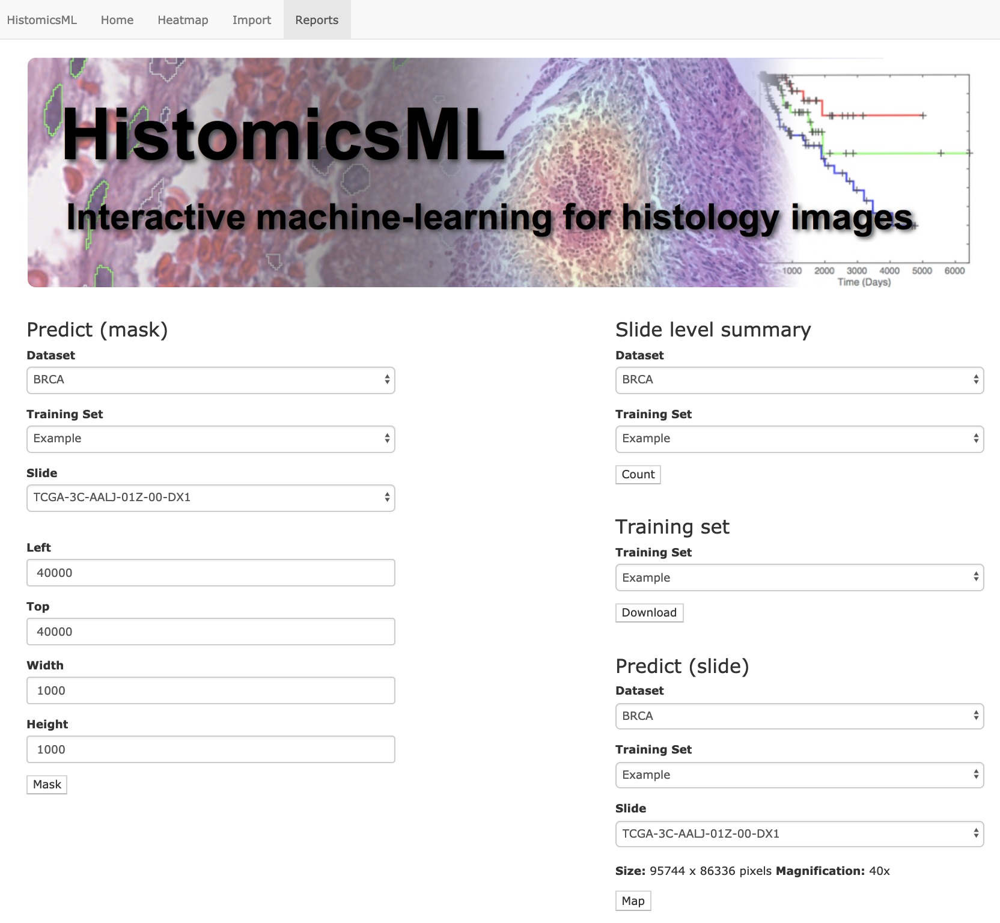

Exporting results¶
The Reports interface can be used to apply classifiers to datasets and to generate object-level and slide-level prediction results for download.
Report with training dataset¶
The Reports menu provides four different types of exports: * Predict (mask): Generates a predicted image .png showing the positive and negative objects in each slide. * Slide level summary: Generates a summary .csv describing the number of positive and negative objects in each slide. * Download a training set: a training set. (.h5) * Predict (dataset): Generates an .h5 binary file describing object-level classifications, prediction scores, centroids, and slide mapping for each object in the dataset.
See the data formats page for more information on the .h5 contents and prediction score interpretations.
